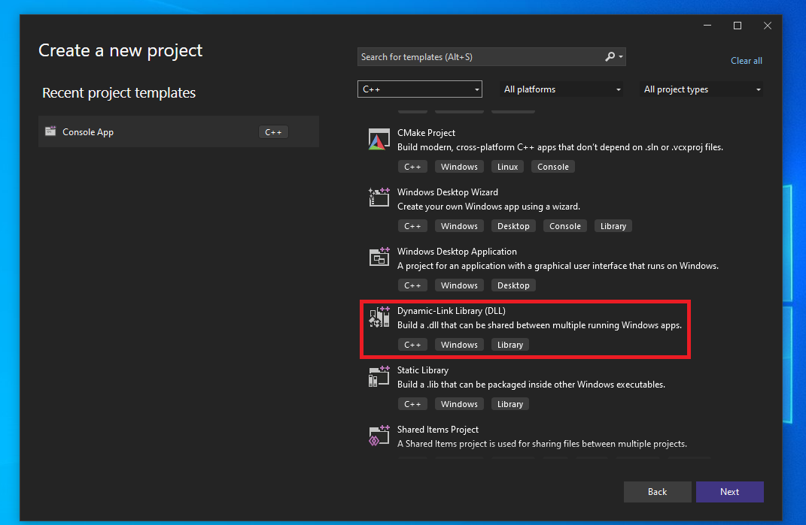
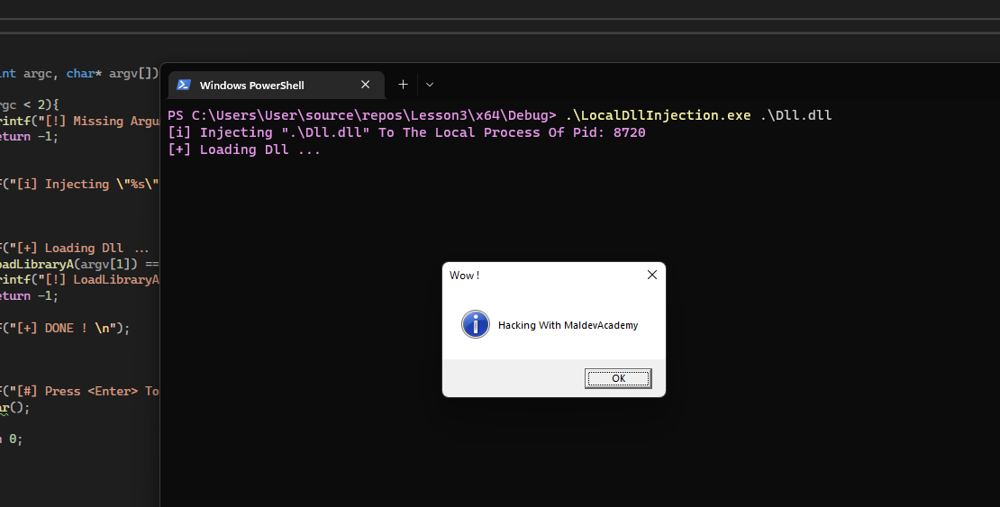
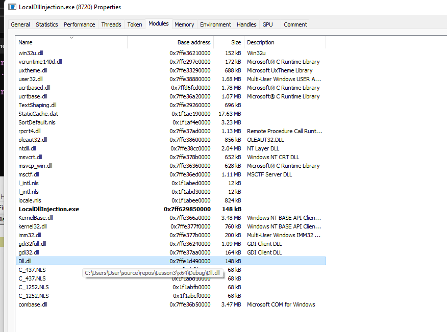

Introduction
This module explores the usage of Dynamic Link Libraries (DLLs) as payloads and demonstrates how to load a malicious DLL file in the current process.
Creating a DLL
Creating a DLL is simple and can be done using Visual Studio. Create a new project, set the programming language to C++, and finally select Dynamic-Link Library (DLL). This will create a DLL skeleton code that will be modified throughout the remainder of this module. For a refresher as to how DLLs work, feel free to review the introductory DLL module.

DLL Setup
This demo will utilize a message box that appears when the DLL is successfully loaded. Creating a message box can be easily done with the MessageBox WinAPI. The code snippet below will run MsgBoxPayload whenever the DLL is loaded into a process. Note that the precompiled headers were removed from the project's C/C++ settings as shown in the introductory Dynamic-Link Library module.
#include <Windows.h>#include <stdio.h>
VOID MsgBoxPayload() {
MessageBoxA(NULL, "Hacking With Offensive Engineering Handbook", "Wow !", MB_OK | MB_ICONINFORMATION);
}
BOOL APIENTRY DllMain (HMODULE hModule, DWORD dwReason, LPVOID lpReserved){
switch (dwReason){
case DLL_PROCESS_ATTACH: {
MsgBoxPayload();
break;
};
case DLL_THREAD_ATTACH:
case DLL_THREAD_DETACH:
case DLL_PROCESS_DETACH:
break;
}
return TRUE;
}Local Injection
Recall that the LoadLibrary WinAPI is used to load a DLL. The function takes a DLL path on disk and loads it into the address space of the calling process, which in our case will be the current process. Loading the DLL will run its entry point, and thus run the MsgBoxPayload function, making the message box appear. Although the concept is simple, it will become useful in later modules to understand more complex techniques.
The code below will take the DLL's name as a command line argument, load it using LoadLibraryA, and perform some error checking to ensure the DLL loaded successfully.
#include <Windows.h>#include <stdio.h>int main(int argc, char* argv[]) {
if (argc < 2){
printf("[!] Missing Argument; Dll Payload To Run \n");
return -1;
}
printf("[i] Injecting \"%s\" To The Local Process Of Pid: %d \n", argv[1], GetCurrentProcessId());
printf("[+] Loading Dll... ");
if (LoadLibraryA(argv[1]) == NULL) {
printf("[!] LoadLibraryA Failed With Error : %d \n", GetLastError());
return -1;
}
printf("[+] DONE ! \n");
printf("[#] Press <Enter> To Quit ... ");
getchar();
return 0;
}Output
As expected, the message box successfully appears after injecting the DLL.

Process Analysis
To further verify that the DLL is loaded in the process, run Process Hacker, double-click the process which loaded the DLL and head to the "Modules" tab. The DLL's name should appear in the list of modules. Clicking on the DLL's name will retrieve additional information about it such as imports, whether it's signed and section names.
